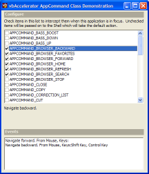

VB5 AppCommand Demonstration (17K)
VB5 AppCommand Demonstration (17K)
 VB6 AppCommand Demonstration (15K)
VB6 AppCommand Demonstration (15K)
 5 Sep 2003
5 Sep 2003
First Posted
 Detecting Mouse XButton Clicks
Detecting Mouse XButton Clicks
 Win32 Hooks in VB - The vbAccelerator Hook Library
Win32 Hooks in VB - The vbAccelerator Hook Library
 Subclassing Without The Crashes
Subclassing Without The Crashes

Responding to AppCommands
Interact with remote controls and additional keys on the keyboard.
The WM_APPCOMMAND message was added to Windows 2000 and ME to provide a mechanism to send the events from extended keys on newer keyboards to applications on the system. Extended keys are things like the back, forward and search button. This tip demonstrates how to intercept events from these keys in a VB application.
Responding to AppCommands
As with other mouse and keyboard messages, the WM_APPCOMMAND message is sent to the input window (which is the currently active control in the foreground window). However, unlike the other messages if the control doesn't explicitly respond to the message it is bubbled up through all parent windows of the active control until either it is processed. Finally, if no processing has occurred the WH_SHELL hook is fired with code HSHELL_APPCOMMAND. If no installed hook consumes this event then finally the system default action associated with the AppCommand (if any) is performed.
This means you can choose to intercept AppCommands in one of two ways: either by installing a WH_SHELL hook or by installing a subclass on the top level window of your application. This tip uses subclassing to intercept App Commands, using the Subclassing and Timer Assistant. For information on how to install a suitable shell hook, refer to the vbAccelerator Hook Library article.
An WM_APPCOMMAND message provides three pieces of information encoded into the lParam parameter of the message:
- The Device which sent the message. This can be a key, a mouse button or an OEM event, allowing manufacturers to create custom AppCommands for new devices.
- The state of various virtual keys, such as the mouse buttons, Control, Shift and Alt.
- The AppCommand code itself, identifying the command being issued. See the list of commands for the currently defined set of AppComamnds.
The code below shows how the WM_APPCOMMAND message is processed. Note that if the event is processed, the code must return true (1) to Windows and consume the message, otherwise it must call the DefWindowProc to ensure the message bubbles up through the other windows and the Shell hook.
Private Property Get ISubclass_MsgResponse() As EMsgResponse
ISubclass_MsgResponse = emrConsume
End Property
Private Function ISubclass_WindowProc( _
ByVal hWnd As Long, ByVal iMsg As Long, _
ByVal wParam As Long, ByVal lParam As Long) As Long
Select Case iMsg
Case WM_APPCOMMAND
Dim cmd As Long
' app command is the hiword of the message with the
' device details in the highest 4 bits excluded:
cmd = (lParam And &HFFF0000) / &H10000
Dim fromDevice As Long
' the device is derived from the highest 4 bits:
fromDevice = (lParam And &H70000000) / &H10000
If (lParam And &H80000000) = &H80000000 Then
fromDevice = fromDevice Or &H8000&
End If
Dim keys As Long
' the key details are in the loword:
keys = lParam And &HFFFF&
Dim processed As Boolean
RaiseEvent AppCommand(cmd, fromDevice, keys, processed)
If (processed) Then
' tell windows we've used it:
ISubclass_WindowProc = 1
Else
' pass on to next handler:
ISubclass_WindowProc = CallOldWindowProc(hWnd, iMsg, wParam, lParam)
End If
End Select
End Function
Demonstration Project
The download includes this code wrapped up in a reusable class called cAppCommand. To use this class in your project, create a WithEvents instance and then call the Attach method passing in the window handle of the top level window of the application. The class then raises AppCommand events whenever one of the AppCommand keys is pressed.
Predefined AppCommands
The predefined AppCommands are listed below:
- APPCOMMAND_BASS_BOOST
Toggle the bass boost on and off. - APPCOMMAND_BASS_DOWN
Decrease the bass. - APPCOMMAND_BASS_UP
Increase the bass. - APPCOMMAND_BROWSER_BACKWARD
Navigate backward. - APPCOMMAND_BROWSER_FAVORITES
Open favorites. - APPCOMMAND_BROWSER_FORWARD
Navigate forward. - APPCOMMAND_BROWSER_HOME
Navigate home. - APPCOMMAND_BROWSER_REFRESH
Refresh page. - APPCOMMAND_BROWSER_SEARCH
Open search. - APPCOMMAND_BROWSER_STOP
Stop download. - APPCOMMAND_CLOSE
(XP or above) Close the window (not the application). - APPCOMMAND_COPY
(XP or above) Copy the selection. - APPCOMMAND_CORRECTION_LIST
(XP or above) Brings up the correction list when a word is incorrectly identified during speech input. - APPCOMMAND_CUT
(XP or above) Cut the selection. - APPCOMMAND_DICTATE_OR_COMMAND_CONTROL_TOGGLE
(XP or above) Toggles between two modes of speech input: dictation and command/control (giving commands to an application or accessing menus). - APPCOMMAND_FIND
(XP or above) Open the Find dialog. - APPCOMMAND_FORWARD_MAIL
(XP or above) Forward a mail message. - APPCOMMAND_HELP
(XP or above) Open the Help dialog. - APPCOMMAND_LAUNCH_APP1
Start App1. - APPCOMMAND_LAUNCH_APP2
Start App2. - APPCOMMAND_LAUNCH_MAIL
Open mail. - APPCOMMAND_LAUNCH_MEDIA_SELECT
Go to Media Select mode. - APPCOMMAND_MEDIA_NEXTTRACK
Go to next track. - APPCOMMAND_MEDIA_PLAY_PAUSE
Play or pause playback. - APPCOMMAND_MEDIA_PREVIOUSTRACK
Go to previous track. - APPCOMMAND_MEDIA_STOP
Stop playback. - APPCOMMAND_MIC_ON_OFF_TOGGLE
(XP or above) Toggle the microphone. - APPCOMMAND_MICROPHONE_VOLUME_DOWN
(XP or above) Increase microphone volume. - APPCOMMAND_MICROPHONE_VOLUME_MUTE
(XP or above) Mute the microphone. - APPCOMMAND_MICROPHONE_VOLUME_UP
(XP or above) Decrease microphone volume. - APPCOMMAND_NEW
(XP or above) Create a new window. - APPCOMMAND_OPEN
(XP or above) Open a window. - APPCOMMAND_PASTE
(XP or above) Paste - APPCOMMAND_PRINT
(XP or above) Print current document. - APPCOMMAND_REDO
(XP or above) Redo last action. - APPCOMMAND_REPLY_TO_MAIL
(XP or above) Reply to a mail message. - APPCOMMAND_SAVE
(XP or above) Save current document. - APPCOMMAND_SEND_MAIL
(XP or above) Send a mail message. - APPCOMMAND_SPELL_CHECK
(XP or above) Initiate a spell check. - APPCOMMAND_TREBLE_DOWN
Decrease the treble. - APPCOMMAND_TREBLE_UP
Increase the treble. - APPCOMMAND_UNDO
(XP or above) Undo last action. - APPCOMMAND_VOLUME_DOWN
Lower the volume. - APPCOMMAND_VOLUME_MUTE
Mute the volume. - APPCOMMAND_VOLUME_UP
Raise the volume.